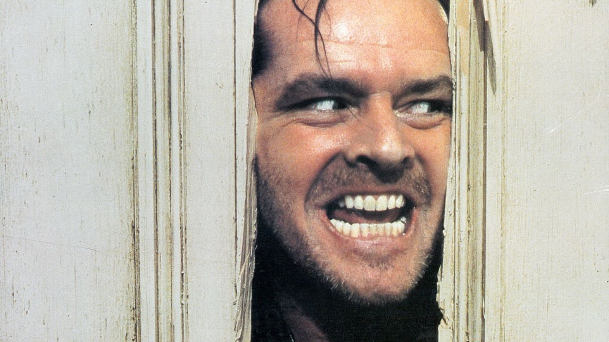
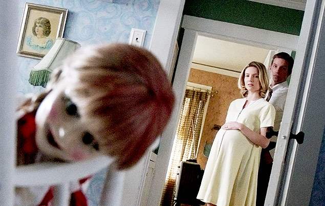
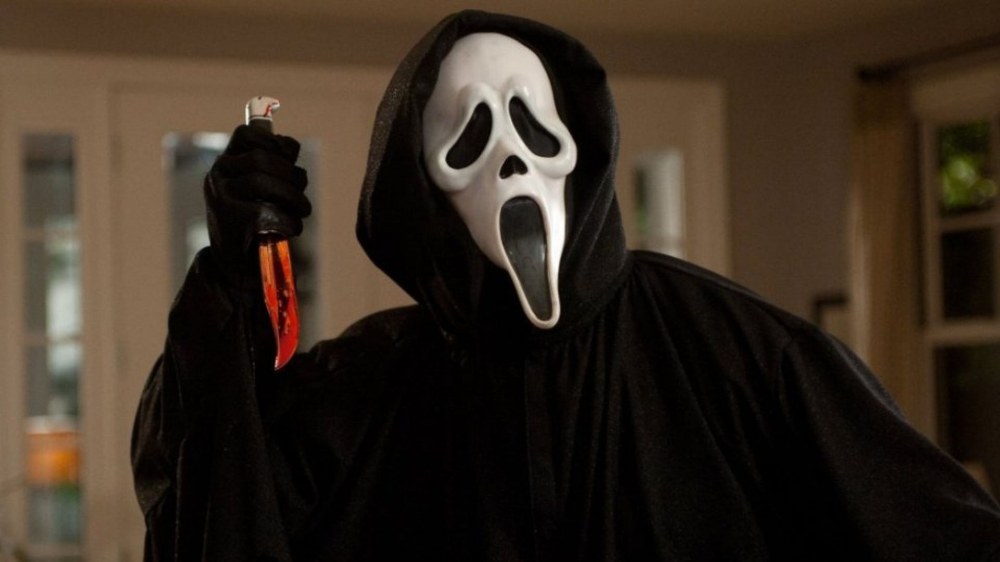
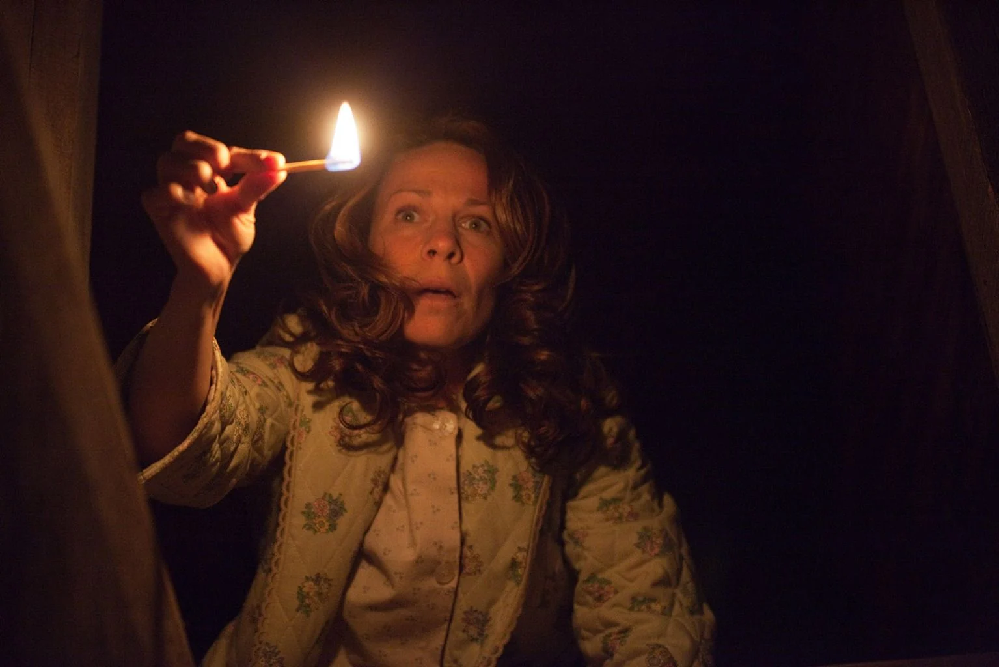
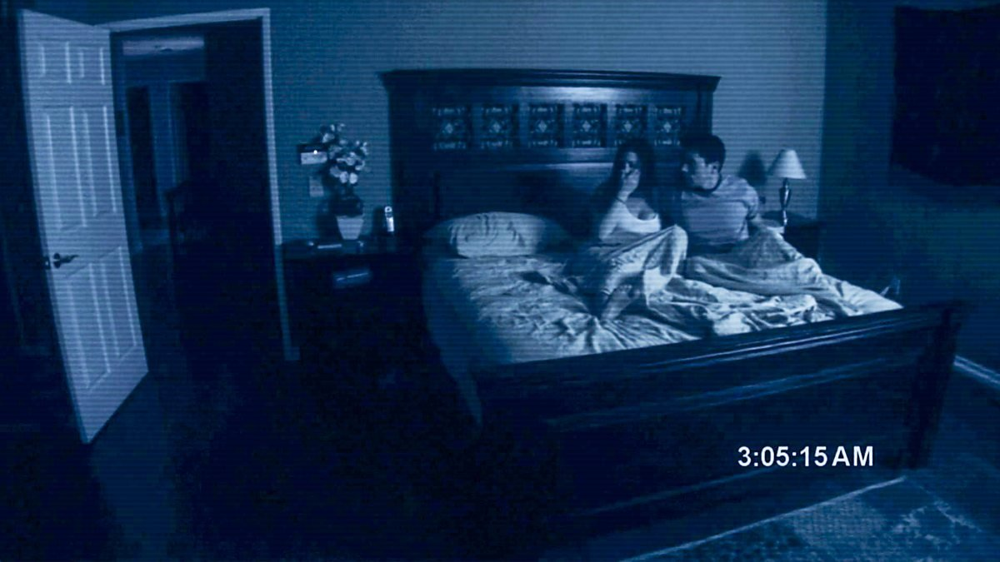
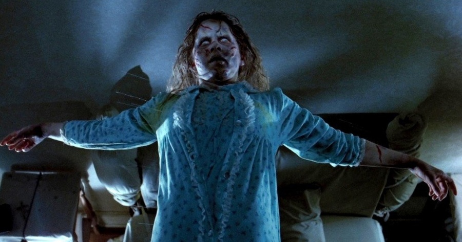
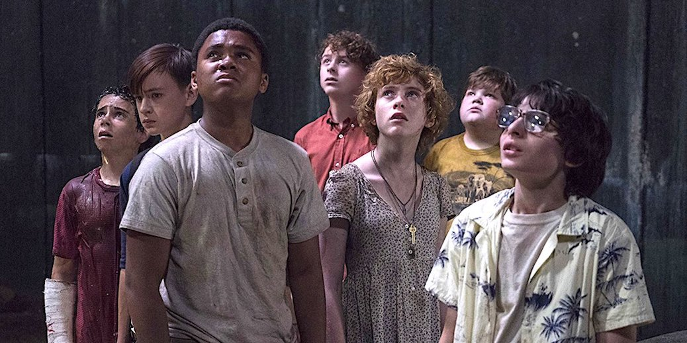

1. Em “O Iluminado” (1980), qual é o nome do hotel onde Jack Torrance trabalha?

2. Qual é o objeto amaldiçoado no filme “Annabelle” (2014)?

3. Em “Pânico” (1996), qual é o nome verdadeiro do assassino conhecido como Ghostface?

4. Em Invocação do Mal (2013), qual é o nome da família que procura a ajuda de Ed e Lorraine Warren?

5. Qual destes filmes é dirigido por Jordan Peele?
6. Em “Atividade Paranormal” (2007), o que o casal principal usa para registrar os eventos estranhos?

7. Em “O Exorcista” (1973), qual é o nome da garota possuída?

8. Em “It: A Coisa” (2017), qual é a forma mais comum que a criatura toma para assustar as crianças?

Checar pontuação final
Integrantes
- Ariel - Nº3
- Arthur - Nº5
- Isabella - Nº18
- Letícia - Nº24
- Monalisa - Nº31